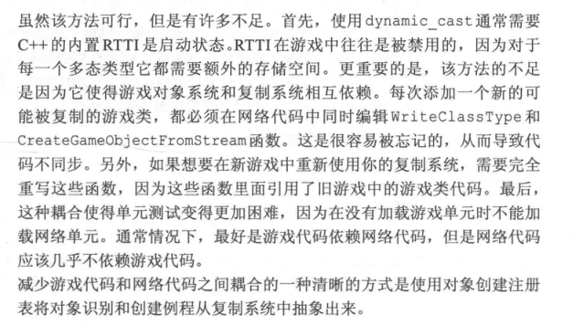
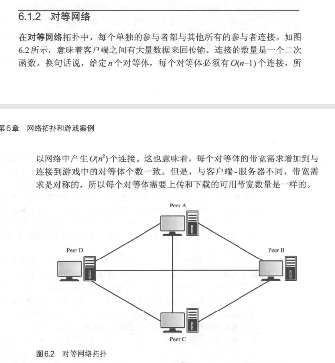
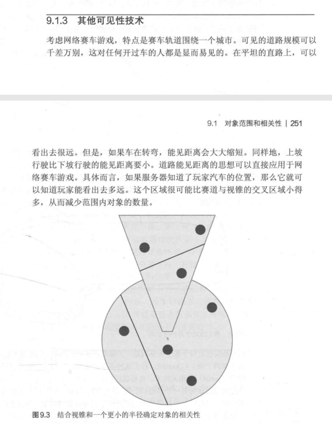
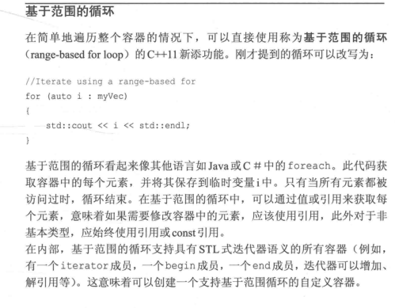

1 概述
本地多人游戏
在同一台机器上，多人一起游戏局域网游戏
串口连接
调制解调器连接
在线网络连接本地游戏和多人网络游戏区别
mud
online game
mmo
游戏中的数据类型
星际网络模型组成
平台数据包模块是底层对标准套接字API的封装
连接管理器平台数据包模块
连接管理器
流管理器
时间管理器
ghost管理器

移动管理器
其他系统
帝国时代
轮班计时器
说明
2 互联网
分组交换
TCP/IP
5层网络模型
7层网络模型
物理层
链路层
网络层

ipv4
ip地址
ipv4数据包
ARP
说明
报文
路由
分片
技巧
ipv6
传输层
udp
概念
tcp
报文
可靠性
三次握手
图
数据传输
断开连接
应用层
DHCP
DNS
NAT
3 SOCKET
3.1 创建socket
3.2 api差异
3.3 socket地址

类型安全
初始化
绑定socket
3.4 udp socket
3.5 tcp socket
发送和接收

类型安全tcp socket
3.6 阻塞和非阻塞IO
多线程
非阻塞IO
select
3.7 其他Socket选项
4 序列化
4.1 序列化需求
4.2 流
内存流
大小端
比特流

4.3 引用数据
4.3.1 内嵌或嵌入
4.3.2 链接
4.4. 压缩
4.4.1 稀疏数组压缩
4.4.2 熵编码

4.4.4 几何压缩
4.5 可维护性
4.5.1 抽象序列化方向
4.5.2 数据驱动的序列化
4.6 总结
5 对象复制
5.1 世界状态
很典型的就是mmo中的世界boss5.2 复制对象
RTTI

5.2.1 对象创建注册表
5.2.2 一个数据包中的多个对象
max translation unit大小与发送包的大小比较接近的时候是非常高效的
5.3 朴素的世界状态复制方法

5.4 世界状态中的变化
5.5 RPC作为序列化对象
5.6 自定义解决方案
5.7 总结
6 网络拓扑和游戏案例
6.1 网络拓扑
决定网络中计算机之间是如何连接的。6.1.1 客户端-服务端
6.1.2 对等网络

n(n-1)/2 个连接
6.2 客户端-服务器实现
6.2.1 服务器和客户端的代码分离

6.2.2 网络管理器和欢迎新客户端
6.2.3 输入共享和客户端代理
6.3 对等网络的实现

6.3.1 欢迎新对等体和开始游戏

6.3.2 命令共享和锁步回合制

6.3.3 保持同步
6.3.3.1 同步伪随机数生成器
6.3.3.2 检查游戏同步
6.4 总结
7 延迟、抖动和可靠性
7.1 延迟
7.1.1 非网络延迟
7.1.2 网络延迟
传播时延优化
CDN做的事情
7.2 抖动
7.3 数据包丢失

7.4 可靠性 TCP还是UDP
低优先级数据的丢失干扰高优先级数据接收
TCP数据接收是有效的两个单独的可靠有序数据流相互干扰
过时游戏状态的重传
TCP和UDP的比较
7.5 数据包传递通知
7.5.1 标记传出的数据包
7.5.2 接收数据包并发送确认
7.5.3 接收确认并传递状态
7.6 对象复制可靠性
7.7 ，模拟真实世界的条件
7.8 总结
8 改进的延迟处理
8.1 沉默的客户终端
8.2 客户端插值
8.3 客户端预测
8.3.1 航位推测法
8.3.2 客户端移动预测和重放
8.3.3 通过技巧和优化隐藏延迟
8.4服务器端回退
8.5 总结
9 可扩展性
9.1 对象范围和相关性
9.1.1 静态区域
9.1.2 使用视锥
9.1.3 其他可见性技术

9.1.4 不可见时的相关性
9.2 服务器分区
9.3 实例化
9.4 优先级和频率
9.5 总结
10 安全性

10.1 数据包嗅探
10.1.1 中间人攻击
10.1.2 在主机上的数据包嗅探

10.2 输入验证
10.3 软件作弊检测
10.3.1 维尔福反作弊系统
10.3.2 典狱长反作弊系统
10.4 保护服务器
10.4.1 分布式拒绝服务攻击
10.4.2 坏数据
10.4.3 时序攻击
10.4.4 入侵
河豚加密算法
10.5 总结
11 真实世界的引擎
11.1 虚幻引擎4
11.1.1 套接字和基本的网络体系
11.1.2 游戏对象和拓扑
11.1.3 Actor复制
11.1.4 远程过程调用
11.2 Unity
11.2.1 传输层API
11.2.2 游戏对象和拓扑
11.2.3 生成对象和复制

11.2.4 远程过程调用
11.2.5 比赛安排
11.3 总结
12 玩家服务
12.1 选择一种服务
12.2 基本设置
12.2.1 初始化、运行和关闭
12.2.2 用户ID和名称
13 云托管专用服务器
13.1 托管或不托管
13.2 行业工具
13.2.1 REST
13.2.2 JSON
13.2.3 NodeJS
13.3 概述和术语
附录A 现代C++基础
C++ 11
auto
nullptr

引用

常量引用
常量成员函数
模板
模板特化
静态断言和类型特征
智能指针
共享指针
唯一指针
弱指针
警告
C++容器
array
at支持边界检查，角标不支持边界检查vector
list
forward_list
map
set
unordered_map
迭代器
基于范围的循环

迭代器的其他用途